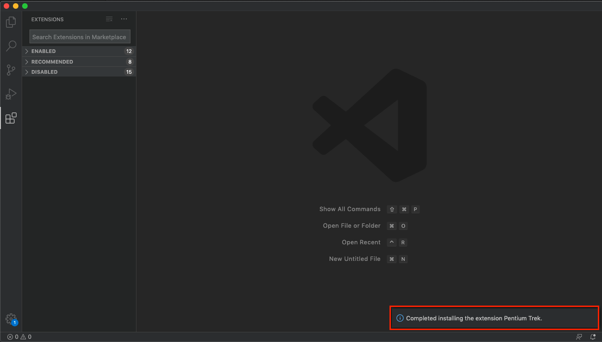

Extension Supported Commands¶
Trek vscode extension 讓您在 vscode 上輕鬆的開發 Marvin 自動化腳本、工作流程，透過 vscode 的命令即可在本機測試、以及把完成的腳本/工作流程打包佈署至您的 Marvin 平台。
Before you begin¶
請先安裝 trek cli tool，如何安裝 可參考。
請先準備好 Pentium trek vscode extension 的 vsix 安裝檔。
以下會經常用到快捷鍵 Ctrl+Shit+P ( or ⌘+⇧+P ) 呼叫出 Command Palette 並執行 trek vscode extension 指令，故接下來不再贅述。
mflow vscode extension 指令都以「mflow: XXX」方式命名。
本機必需要有啟動中的 docker。
Installing trek vscode extension¶
請使用以下任一方式安裝：
安裝方式 1.
打開 vscode，點選左側 Extension，點選右上角「…」，選擇 「Install from VSIX…」後，選擇 trek vsix 安裝檔：
安裝方式 2.
叫出 Command Palette，選擇「Extension: Install from VSIX」後，選擇 mflow vsix 安裝檔。

成功安裝後，右下角會出現「Completed installing the extension Pentium Trek.」提示訊息。
叫出 Command Palette，輸入 trek 顯示多項 trek 指令，即表示安裝完成。
Configuring trek vscode extension¶
在使用 trek vscode extension 之前，請先指定已安裝 trek cli 的位置，若是安裝於 global (非虛擬環境)，可不用特別設定。
開啟 vscode 設定檔，尋找 Extensions 下的 Pentium Trek，並設定 trek cli 位置。

Command list¶
The first trek project¶
假設我們的開發範例：
監控 redis 的連線，若連線不到標註 <redis:unreachable> 標籤，並發送 chatbot 通知。
因此 workflow 需要三個腳本：
撈出特定服務器來檢查 redis 是否正常
針對結果打上標籤
發送通知 (若有不正常的)
其中 1 為此次新增腳本，2, 3 則為既有腳本可直接安裝
Create project¶
使用 Command Palette 叫出「Trek: Create Project」指令，並填入以下資訊：

選擇專案存放位置
輸入專案名稱為「host.detect.redis」
輸入「N」不產生範本專案
右下角顯示建立專案成功訊息，並以 workspace 方式開啟專案